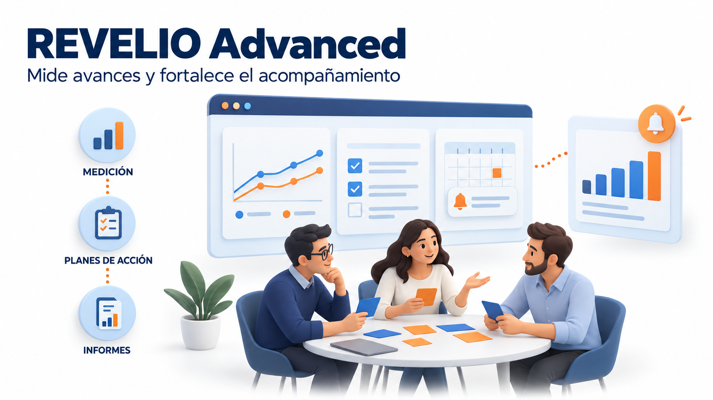
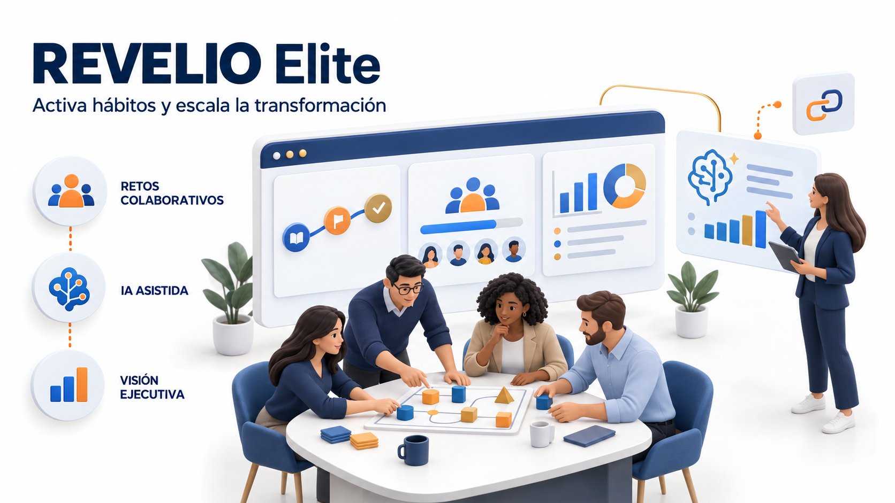

01 Objetivo del proyecto
Extender el acompañamiento más allá del taller
Desarrollar una aplicación web que complemente las experiencias y consultorías de REVELIO, permitiendo dar seguimiento a las empresas atendidas, recoger feedback y visualizar los avances de sus equipos.
No se plantea inicialmente como un software de recursos humanos ni como una herramienta de vigilancia o calificación de empleados, sino como un espacio de acompañamiento y seguimiento de la transformación cultural.
02 Necesidad que resuelve
Un solo lugar para el seguimiento
Actualmente REVELIO no cuenta con una plataforma propia para centralizar el seguimiento a sus clientes. La solución debe permitir:
- Organizar empresas, equipos, participantes y programas.
- Registrar las experiencias realizadas y los compromisos adquiridos.
- Recoger feedback después de las intervenciones.
- Consultar avances y detectar compromisos pendientes.
- Entregar a cada empresa una vista clara de su proceso.
- Mantener la continuidad entre talleres y sesiones de acompañamiento.
Los cuatro pilares de REVELIO
Los programas podrán clasificarse según:
03 Usuarios y permisos
Cuatro perfiles, un límite claro
| Usuario | Acceso principal |
|---|---|
| Administrador REVELIO | Gestiona empresas, usuarios, programas y configuración de la plataforma. |
| Consultor REVELIO | Administra los procesos de las empresas asignadas, registra sesiones y realiza seguimiento. |
| Líder de la empresa cliente | Consulta los programas, compromisos e indicadores autorizados de su empresa. |
| Participante | Consulta sus actividades, responde feedback y actualiza sus compromisos. |
04 Opción Essential
Centralizar y dar seguimiento
EssentialIdeal para: iniciar con una plataforma funcional que organice la operación y permita a los clientes consultar su proceso.
4.1 · Funcionalidades incluidas
| Módulo | Requerimientos esenciales |
|---|---|
| Acceso y usuarios | Inicio de sesión, recuperación de contraseña y permisos según rol. |
| Empresas y equipos | Crear empresas, contactos, equipos y participantes. |
| Programas de acompañamiento | Registrar objetivo, pilar de REVELIO, consultor responsable, fechas y estado. |
| Sesiones y experiencias | Registrar talleres, asistentes, observaciones y materiales de apoyo. |
| Compromisos | Crear compromisos con responsable, fecha límite y estado: pendiente, en proceso o completado. |
| Feedback básico | Formulario estándar después de cada sesión, con valoración y comentarios. |
| Panel de seguimiento | Visualizar sesiones realizadas, compromisos completados y pendientes, y feedback recibido. |
| Portal del cliente | Permitir que el líder consulte el avance autorizado de su empresa y sus materiales. |
4.2 · ¿Cómo funcionaría?
- REVELIO registra una empresa y crea su programa.
- El consultor registra el taller y sus participantes.
- Se asignan compromisos derivados de la experiencia.
- Los participantes responden el feedback y actualizan sus compromisos.
- REVELIO y el líder consultan el seguimiento desde la plataforma.
4.3 · Valor para el cliente
4.4 · Criterio clave de aceptación
REVELIO debe poder gestionar un programa completo, desde el registro de la empresa hasta la consulta de compromisos y feedback, sin depender de hojas de cálculo para ese flujo.
05 Opción Advanced
Medir avances y mantener el acompañamiento
Advanced
Incluye todo lo de Essential
Ideal para: REVELIO cuando necesita gestionar varios procesos simultáneos y ofrecer un acompañamiento más estructurado.
5.1 · Nuevas funcionalidades
| Módulo nuevo | Requerimientos |
|---|---|
| Evaluaciones personalizadas | Crear cuestionarios según el programa: comunicación asertiva, liderazgo, colaboración o adopción digital. |
| Medición inicial y posterior | Aplicar evaluaciones comparables al inicio y al cierre de una intervención, con seguimientos intermedios si se requieren. |
| Planes de acción | Agrupar compromisos en objetivos, hitos y actividades por equipo. |
| Recordatorios automáticos | Enviar correos por actividades próximas a vencer, evaluaciones pendientes y nuevos materiales. |
| Paneles comparativos | Consultar evolución por periodo, programa o equipo, mostrando también participación y cantidad de respuestas. |
| Feedback confidencial | Habilitar encuestas con resultados agregados y un umbral mínimo de respuestas para reducir el riesgo de identificar personas. |
| Informes descargables | Generar informes PDF con identidad de REVELIO y exportar datos autorizados a Excel o CSV. |
| Biblioteca por programa | Organizar guías, ejercicios y recursos de consulta asociados al acompañamiento. |
5.2 · Ejemplo de uso
Después de un taller de liderazgo cercano:
- El equipo responde una evaluación inicial.
- Se asigna un plan de acción para las semanas siguientes.
- La plataforma recuerda los compromisos.
- Se aplica una segunda evaluación.
- REVELIO presenta cambios observados y tareas que requieren refuerzo.
Importante: la comparación muestra evolución en los indicadores recogidos; por sí sola no demuestra que el taller haya causado todos los cambios.
5.3 · Valor para el cliente
5.4 · Criterio clave de aceptación
El sistema debe permitir comparar dos mediciones del mismo programa y generar un informe que indique resultados, fechas, participación y compromisos pendientes.
06 Opción Elite
Sostener hábitos y escalar el acompañamiento
Elite
Incluye todo lo de Advanced
Ideal para: consolidar la plataforma como un diferencial de REVELIO y mantener la participación entre intervenciones presenciales.
6.1 · Nuevas funcionalidades
| Módulo nuevo | Requerimientos |
|---|---|
| Retos y misiones de equipo | Crear desafíos digitales vinculados a comportamientos reales: practicar escucha activa, compartir aprendizajes o realizar conversaciones de feedback. |
| Gamificación colaborativa | Reconocer hitos colectivos mediante insignias y progreso compartido, evitando rankings individuales de desempeño. |
| Rutas de aprendizaje | Organizar secuencias de actividades, recursos y evaluaciones por pilar y equipo. |
| Asistente de análisis con IA | Elaborar borradores de resúmenes de feedback agregado y sugerencias de seguimiento para revisión del consultor. |
| Alertas configurables | Notificar baja participación, compromisos vencidos o descensos en indicadores según reglas acordadas con REVELIO. |
| Panel ejecutivo | Consolidar resultados por sedes, áreas y programas, respetando permisos y mínimos de agregación. |
| Integraciones empresariales | Conectar con herramientas acordadas, como Microsoft Teams o calendarios, según disponibilidad de sus API y licencias. |
| Acceso corporativo y auditoría | Incorporar inicio de sesión empresarial mediante un proveedor acordado y registro de acciones relevantes. |
6.2 · Ejemplo de uso
Después de una experiencia sobre comunicación asertiva:
- Los equipos reciben una misión semanal.
- Registran una breve reflexión sobre su aplicación.
- La plataforma muestra el progreso colectivo.
- Las reglas de seguimiento alertan al consultor si disminuye la participación.
- La IA prepara un resumen de tendencias del feedback agregado.
- El consultor revisa el contenido y decide cómo continuar el acompañamiento.
6.3 · Valor para el cliente
6.4 · Criterio clave de aceptación
REVELIO debe poder publicar una ruta con misiones, consultar su participación y revisar un resumen asistido por IA antes de compartirlo con el cliente.
07 Comparación de las opciones
Qué incluye cada opción
| Capacidad | Essential | Advanced | Elite |
|---|---|---|---|
| Gestión de empresas, equipos y programas | |||
| Sesiones, materiales y compromisos | |||
| Feedback básico y portal del cliente | |||
| Evaluaciones personalizadas y comparativas | |||
| Planes de acción y recordatorios automáticos | |||
| Informes descargables | |||
| Retos colaborativos y rutas de aprendizaje | |||
| Resúmenes asistidos por IA | |||
| Panel ejecutivo consolidado | |||
| Integraciones y acceso corporativo |
08 Requerimientos transversales
Aplican a las tres opciones
La seguridad básica no debe depender del plan contratado.
Uso desde computador, tableta y celular.
Navegación clara, contraste adecuado y formularios comprensibles.
Conexión HTTPS, contraseñas protegidas y permisos verificados en el servidor.
Separación efectiva entre empresas.
Copias de seguridad con periodicidad y retención acordadas.
Diseño alineado con la Ley 1581 de 2012 y normativa colombiana aplicable, sujeto a validación jurídica.
Definir quién ve respuestas, qué se agrega y cuánto tiempo se conserva.
Documentar fórmulas, fuentes y periodos. Cumplir actividades no equivale automáticamente a mejorar la cultura.
09 Aspectos por definir antes de cotizar
Lo que necesitamos acordar
- Número estimado de empresas, usuarios y usuarios simultáneos.
- Cuestionarios e indicadores que aportará REVELIO.
- Visibilidad de respuestas individuales y notas del consultor.
- Volumen de archivos y necesidad de importar información existente.
- Integraciones concretas para Elite.
- Presupuesto de alojamiento, correo, IA, soporte y mantenimiento.
10 Recomendación
Cómo elegir
Permite validar el uso real de la plataforma.
Ofrece el equilibrio más directo entre seguimiento, medición y valor para las empresas clientes.
Añade el diferencial más alineado con REVELIO: prolongar la experiencia lúdica mediante retos, aprendizaje continuo y acompañamiento asistido por tecnología.